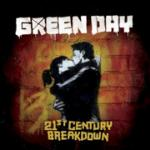

Green Day 21st Century Breakdown
(Reprise)
As one of the purveyors of the post grunge scene, Green Day is an anomaly. The band that stuck around and managed to mature while no one was looking (see 2000’s underrated Warning) remains relevant today. This is mainly because the trio still has something to say, something that revolves around more than getting high and soaking up the slacker lifestyle. Now we’re 15 years after that muddy Woodstock performance, after the success and overexposure of Grammy-winning American Idiot and Green Day responds exactly as expected, with another rock opera saying the same things as the last.
The biggest problem here is the predictability of this project. Up until now the band has been surprisingly unsystematic. Who the hell expected to hear Green Day at graduations and proms, and who thought a post-millennial rock opera could be a success? 21st Century Breakdown, with its vapid title and obligatory cover art is just too obvious. We’re introduced to characters in a three act convoluted narrative and asked to follow along on their nearly 70 minute journey. The title track makes the message clear with the line “My generation is zero.” There’s no need for metaphors here, the boys pretty much say what they mean in relation to the social issues at hand. Now, pertinence and timeliness is always important for this kind of project, but at this point the bad guys are out of office and errant complaints seem like stale, crumbling pound cake. Billie Joe has forced himself into a tight spot lacking the specific targets he shot down with ease on American Idiot.
Thankfully, the strength and diversity of these songs gives Green Day a pass to engage in all the posturizing they want. New textures are explored with the dark music hall vibe of ¿Viva La Gloria? (Little Girl). The balladic 21 Guns uses enough Queen-isms to make for a fine piece of melodic grandeur. With prevalent piano and string arrangements, these genre exercises are key and show that Green Day are capable of more than playing three chords at breakneck speeds. The boys are scarily accurate and precise in their assault on their instruments. Every possible rough edge has been sanded down to a blinding sheen. The guitars are gargantuan and Billie Joe’s vocals sound heavily processed. The intensive labor put into 21st Century Breakdown seeps out of every note, with little left to chance. The first single is the redundant shout along, Know the Enemy. There’s energy here and it’s sure to get the crowds going. But once again, what all the flag-waving and fist pumping is for, I’m not too sure.
Melodic pop-punk is the point, after all, and on that level it’s a success. Even with a muddled message, credit is due for the ambition it takes to vent these modern frustrations and break free from the shackles of verse-chorus-verse. In the process they come up with some of their most enjoyable hooks yet. It simply may have been even more effective if Green Day returned to their sophomoric roots minus the grand concept. It would make American Idiot that much more precious and this album a lot more fun. But this is what Green Day is now. Matured? Yes, refreshingly so even. Still fun? That’s a harder question.
20 May, 2009 - 15:10 — Brett Oronzio